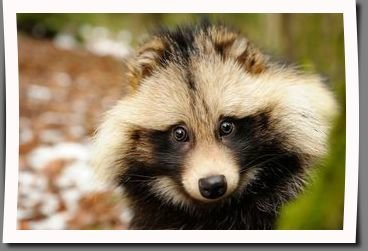

Couple extra tidbits about Tanukis
They take their social relationships very seriously
Raccoon dogs are the only canines that hibernate in winter
Tanuki were the subject of a popular animated children's film
Some extra facts and information based on this list

Back